Chapter 9 Equations and Graphs
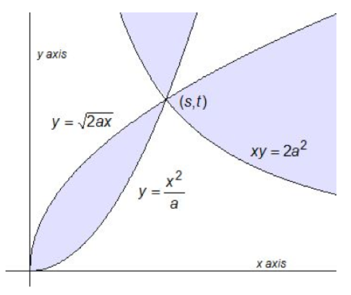
In ancient Athens, around 430 BCE, one quarter of the city’s residents perished in a plague. The people of Athens consulted the oracle at Delos, so the story goes, to find a cure for the plague. The oracle replied that they should construct a new cubical altar to the gods, and its volume should be double the volume of the existing cubical altar. Now, if the original altar had a side of length \(x\text{,}\) you can work out that the new altar should have side length \(\sqrt[3]{2} x\text{,}\) so that the new volume is \(2x^3\text{.}\)
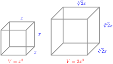
But the ancient Greeks could not use algebra to solve the problem -- it hadn’t been invented yet. Instead, they used geometrical methods. The Delian problem of doubling the cube remained unsolved for many years. But sometime around 350 BCE, a mathematician named Menaechmus, who was the tutor to Alexander the Great, solved the problem, and in so doing invented the conic sections.
A "section" is a slice, and the conic sections are the curves formed by slicing a cone by a plane. Depending on the angle of the slice, we get four different curves, as shown below.

We have already met the parabola, which is described by the quadratic equation \(y=ax^2+bx+c\text{.}\) It turns out that the other conic sections are also described by quadratic equations. These curves have many interesting properties as abstract objects, but as often happens with mathematical discoveries, they are also useful in applications. Conic sections appear in art and architecture, in medicine, science, and engineering.

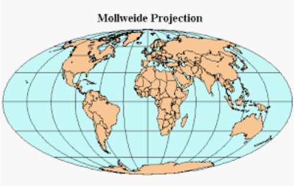
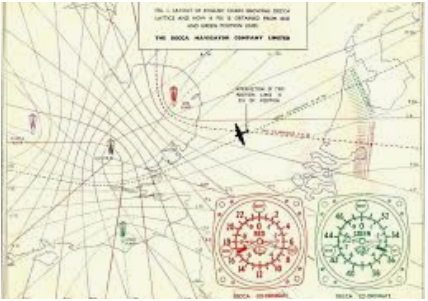
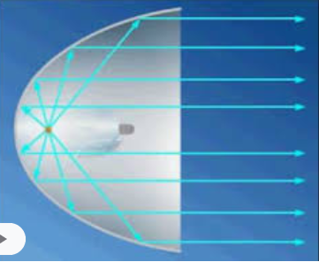
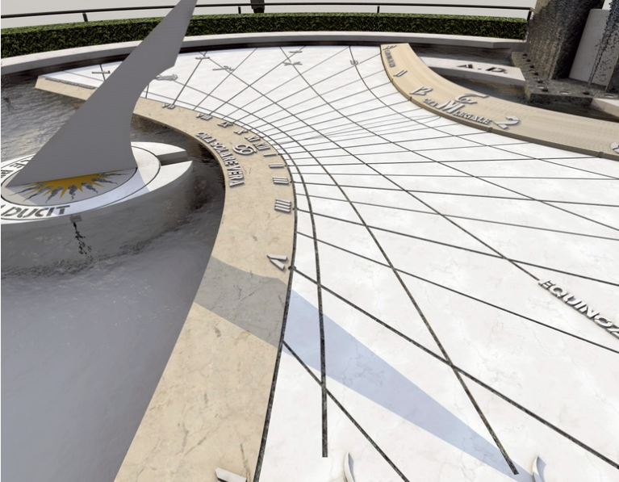
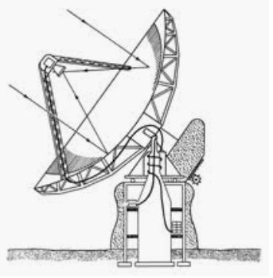
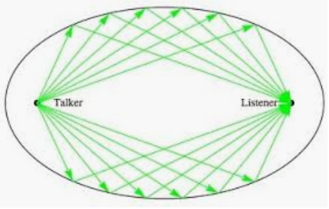
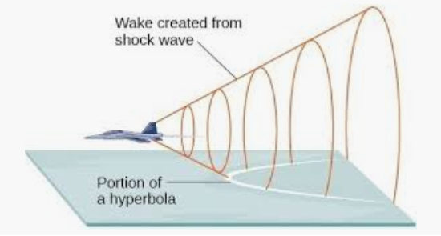
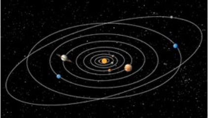

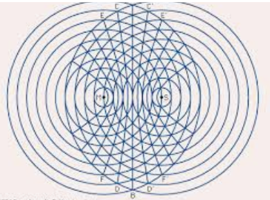
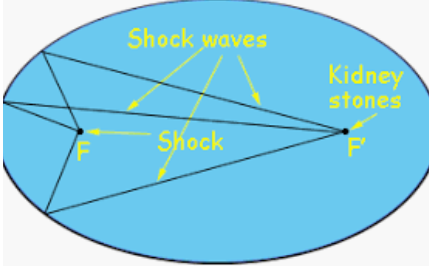